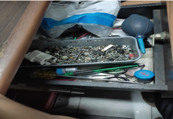

PT Metindo Erasakti adalah perusahaan yang bergerak di bidang manufaktur otomotif dan juga vendor pabrik kendaraan ternama. Perusahaan ini berdiri sejak tahun 1989 dan telah memiliki pengalaman dan keahlian luas dalam berbagai aspek di industri manufaktur. Pada tahun yang sama PT Metindo Erasakti menjalin kerja sama dengan Astra-Export, serta memproduksi dan mengekspor perangkat keras rumah tangga hingga ke Amerika Serikat dan Eropa. Setahun berikutnya, barulah perusahaan ini memasuki pasar manufaktur suku cadang otomotif. PT Metindo Erasakti mengawali produksi suku cadang otomotif dengan pelanggan produsen mobil. Baru kemudian pada tahun 1994, perusahaan ini memperluas bisnisnya dengan memproduksi suku cadang sepeda motor
PT Metindo Erasakti memiliki motto “Together We Can” dan visi untuk “menjadi produsen komponen otomotif kelas dunia”.
1. Mencapai kepuasan pelanggan yang sangat baik melalui tindakan cepat dan respon yang baik.
2. Memastikan keberhasilan perusahaan melalui komitmen total Dengan mempertahankan standar pencapaian yang tinggi, kerja tim Yang efektif dan perbaikan dan inovasi yang berkelanjutan.
3. Memberikan Kesempatan pelatihan dan pengembangan diri dengan Karyawan yang terlibat aktif(TPS, TPM, QCC dan UIP) memberi Penghargaan dan mempromosikan karyawan berdasarkan prestasi Kerja, inisiatif, integritas, loyalitas, kualitas dan profesionalisme.
Alat - alat keselamatan kerja yang digunakan saat bekerja di PT. METINDO ERA SAKTI, meliputi :
1. Kaus Kaki Kaus Kaki adalah alat yang digunakan untuk melindungi kaki saat bekerja dari debu.
2. Masker Masker adalah alat yang digunakan untuk melindungi pernapasan kita dari debu dan meminimalisir serta mencegah infeksi virus CORONA VIRUS DISEASE 19 ( COVID - 19 )
3.Helm Konstruksi Helm Konstruksi digunakan untuk menyelamatkan kepala kita dari hal-hal yang tidak di inginkan.
1. Obeng
2. Alat Pembersih Debu / Kuas
3. Driver Dan Software
4. Hardware Cadangan
5. Thermal Paste
PT Metindo Erasakti memproduksi berbagai komponen dan perlengkapan otomotif untuk kendaraan roda dua dan roda empat. Berbagai produk yang dihasilkan, antara lain:
1. Roda dua: Chasis Motor, Swing Arm, Stand Comp Prop, Hand Seat, Foot Rest Sub Assy, Handle Bar, dan Stand Main.
2. Roda empat: Tub Sub Assy Tilt Cabin, Support S/A Radiator Upper Center, Tub Sub Assy Tilt Cabin, Panel Rocker Outer, Steering Hange Beam, Centre Pillar Inn, Panel Comp, RR Floor Front, dan Panel Rocker Outer.
Jl. Narogong Raya KM 12.5 Bantar Gebang - Bekasi
(021) 8250418
© Prakerin. All Rights Reserved.